近日，作者分析了微软1月补丁日修复的一个漏洞CVE-2021-1648，这是一个可以在splwow64进程空间进行任意地址读写的漏洞。由于splwow64是一个普通权限的进程且splwow64在IE浏览器的白名单目录里，因此这个漏洞可以用于提权低权限的IE浏览器渲染引擎进程从而绕过IE浏览器的沙箱。这篇文章主要介绍一下splwow64的机制和CVE-2021-1648的成因。
环境：Windows10 20H2 2020-12补丁
splwow64机制
wow64是微软为了在64bit系统兼容运行32bit程序的一个组件，具体来说，在64bit程序调用32bit的CreateDC Windows会用splwow64.exe处理这个调用，64bit程序与splwow64.exe使用lpc进行通信。
splwow64在splwow64!GDIThunkingVIALPCThread里调用NtCreatePort开启处理信息的端口，在这里我们可以计算得到调用NtSecureConnectPort与splwow64通信的端口名称
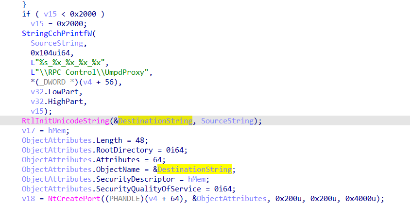
我们可以从xp sp1代码\NT\base\ntos\lpc\lpcconn.c中NtSecureConnectPort的注释中得到一些lpc通信机制的信息，这里摘抄部分注释如下
1 | 1、NtSecureConnectPort通过PortName参数连接server端口，PortName必须与NtCreatePort指定的一致 |
splwow64在splwow64!TLPCMgr::ProcessRequest处理接收的消息，这里过滤了传入消息的长度，只处理DataSize=0x20长度的消息，
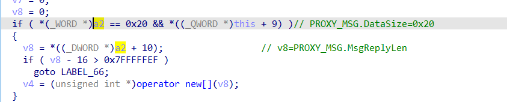
并将某些类型合法消息的[0x30],[0x40],[0x38]作为参数传递给Gdi32full!GdiPrinterThunk，这里传递的参数都是调用者可控的。
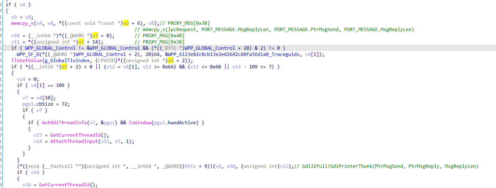
漏洞分析
CVE-2021-1648出现在0x6d消息的处理过程中，CVE-2021-1648是在CVE-2020-0986补丁的基础上出现的，CVE-2020-0986的补丁在gdi32full!GdiPrinterThunk里主要加了两个缓解FindDriverForCookie、FindPrinterHandle和UMPDPointerFromOffset、UMPDStringPointerFromOffset，由于Gdi32full!GdiPrinterThunk传入的参数可控，这两个缓解实际上都是可以绕过的。
FindDriverForCookie、FindPrinterHandle绕过
Gdi32full!FindDriverForCookie的功能是根据传入的值a1，从一个全局变量gdi32full+EABA0里遍历得到偏移[7]的位置为a1的地址并返回。
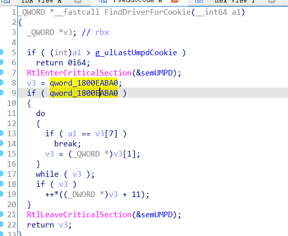
Gdi32full!FindPrinterHandle的功能是根据传入的参数a1（地址值）、a2、a3，从a1偏移0x40的位置遍历，返回该地址偏移2*4=a2且3*4=a3的偏移值。
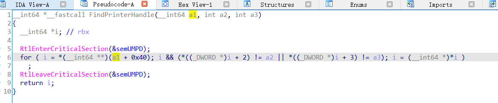
这两处缓解可以通过0x6a消息调用一次gdi32full!bAddPrinterHandle来绕过，gdi32full!bAddPrinterHandle调用时参数如下，其中第二、三个参数是调用者可控的。
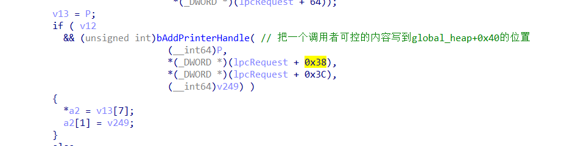
gdi32full!bAddPrinterHandle的功能是把传入的a2、a3写入到global_heap偏移2*4、3*4的位置。需要注意的是这里*(QWORD*)(global_heap+0x40)的位置实际上和上文Gdi32full!FindPrinterHandle中*(a1+0x40)相同，
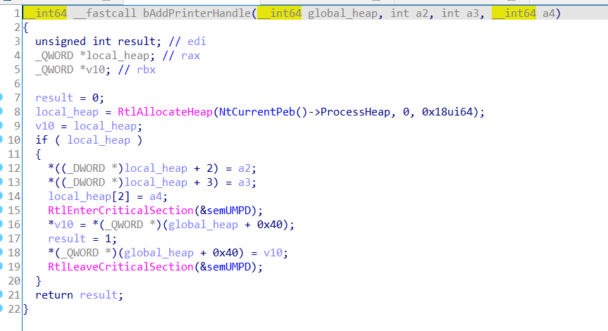
再看一下0x6d消息是如何调用FindPrinterHandle的，这里的参数二、三是我们可控的，这样在gdi32full!bAddPrinterHandle调用中*(QWORD*)(global_heap+0x40)写入的内容和gdi32full!FindPrinterHandle中要寻找的内容位置相同且都可控，我们就可以绕过gdi32full!FindPrinterHandle这个检查。
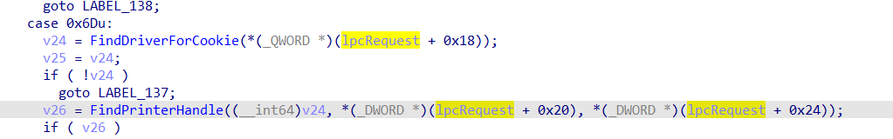
UMPDPointerFromOffset、UMPDStringPointerFromOffset绕过
CVE-2020-0986补丁加的另一个缓解是检查指针是否在32bit的范围，
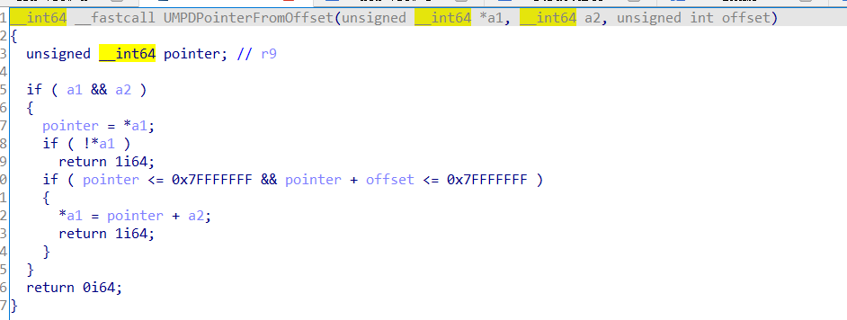
这个缓解可以绕过的原因是splwow64.exe与32bit兼容，所以splwow64中堆栈地址都是32bit范围内的，由于lpc通信过程中server端会开辟内存并拷贝client端传入的消息，我们构造0x6d畸形请求，
1 | LpcRequest.PtrMsgSend = (UINT64)ClientView.ViewRemoteBase; |
即发送消息的地址设置为lpc server端的堆地址即可绕过这一缓解。
splwow64中执行server端开辟内存拷贝的过程在splwow64!TLPCMgr::ProcessRequest
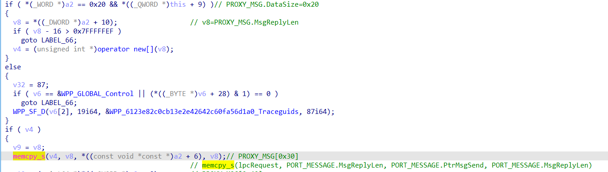
任意地址读写
绕过了上述两个缓解，splwow64会调用一个src可控、dst可控的memcpy，由于这里memcpy的src和dst没有检查范围，我们可以通过修改src读dst的内容进行任意地址读，修改dst为目标地址、修改src为目标内容进行任意地址写。
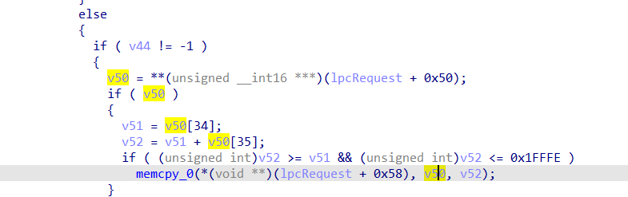
总结
这里介绍了splwow64的一些机制并分析了CVE-2021-1648的成因，重点分析了微软针对CVE-2020-0986补丁所加的两个缓解机制的绕过，希望读者读完能有所收获。
参考
https://bugs.chromium.org/p/project-zero/issues/detail?id=2096